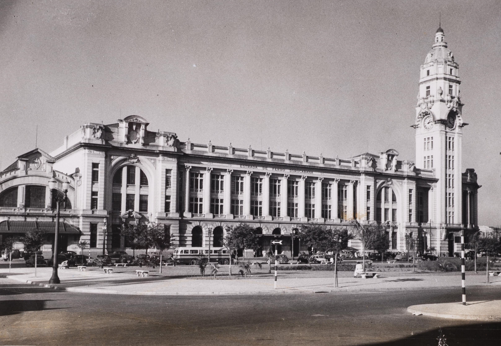

N.º 01 Café, casas e gente
O que a cidade esconde?
Uma história de riqueza, trabalho e memória nos Campos Elíseos de São Paulo.
Trabalho de extensão da disciplina "Café e Escravidão: uma história global", de Rafael Marquese. Novembro de 2026.
Um projeto de História da Universidade de São Paulo
N.º 02